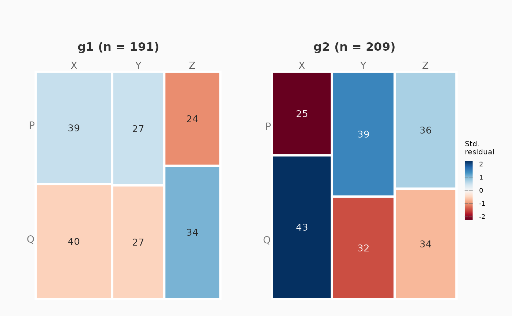

Tidy accessor for a mosaic_analysis result
Source:R/mosaic_stratified.R
as.data.frame.mosaic_analysis.RdReturns one of the result's tables as a plain data.frame, so callers
never have to reach into the object. For a stratified fit (one produced with
by =), what = "strata" gives one row per stratum with its own
test, effect size and multiplicity-corrected p-value.
Usage
# S3 method for class 'mosaic_analysis'
as.data.frame(
x,
row.names = NULL,
optional = FALSE,
what = c("summary", "table", "residuals", "strata", "overall"),
...
)Arguments
- x
A
mosaic_analysisobject.- row.names, optional
Ignored; present for S3 consistency.
- what
Which table to return:
"summary"(the statistical summary, default),"table"(consolidated observed/expected counts),"residuals"(standardized Pearson residuals),"strata"(one row per stratum), or"overall"(the pooled test plus the Cochran-Mantel-Haenszel test). The last two require a stratified fit.- ...
Ignored.
Value
A data.frame. For what = "strata", one row per stratum
with columns stratum, n, test, statistic,
df, p_value, p_adjusted, cramers_v,
effect_size and n_cells_beyond_2. For
what = "residuals" on a stratified fit, one row per stratum x cell.
Examples
set.seed(1)
d <- data.frame(
a = sample(c("X", "Y", "Z"), 400, replace = TRUE),
b = sample(c("P", "Q"), 400, replace = TRUE),
g = sample(c("g1", "g2"), 400, replace = TRUE)
)
fit <- mosaic_analysis(d, "a", "b", by = "g", min_count = 5, verbose = FALSE)

as.data.frame(fit, what = "strata")
#> stratum n test statistic df p_value p_adjusted cramers_v
#> 1 g1 191 Chi-square test 1.107 2 0.57494555 0.5749456 0.076
#> 2 g2 209 Chi-square test 5.134 2 0.07676742 0.1535348 0.157
#> effect_size n_cells_beyond_2
#> 1 negligible 0
#> 2 small 2
as.data.frame(fit, what = "overall")
#> scope test statistic df p_value cramers_v
#> 1 pooled Chi-square test 2.354 2 0.3082534 0.077
#> 2 conditional Cochran-Mantel-Haenszel 2.321 2 0.3132742 NA
#> common_or or_ci_low or_ci_high
#> 1 NA NA NA
#> 2 NA NA NA